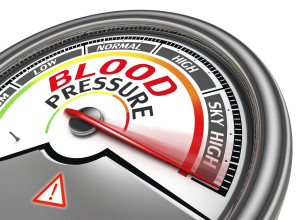

In most cases, it's impossible to pinpoint an exact cause of high blood pressure.
The heart is a muscle that pumps blood around the body.
It pumps blood with low oxygen levels toward the lungs, which replenish oxygen supplies.
The heart then pumps oxygen-rich blood around the body to supply the muscles and cells. This pumping action creates pressure.
If a person has high blood pressure, it means that the walls of the arteries are constantly under too much force.
Other main causes of high bloop pressures are as follows:
People who have close family members with hypertension have a significantly higher risk of developing it themselves.
People who are overweight or have obesity are more likely to develop high blood pressure.
Lack of exercise and having a sedentary lifestyle raise the risk of hypertension.
Many healthcare professionals say that a diet high in fats and salt leads to a high risk of hypertension. However, most dietitians stress that the problem is the type of fat rather than the amount.